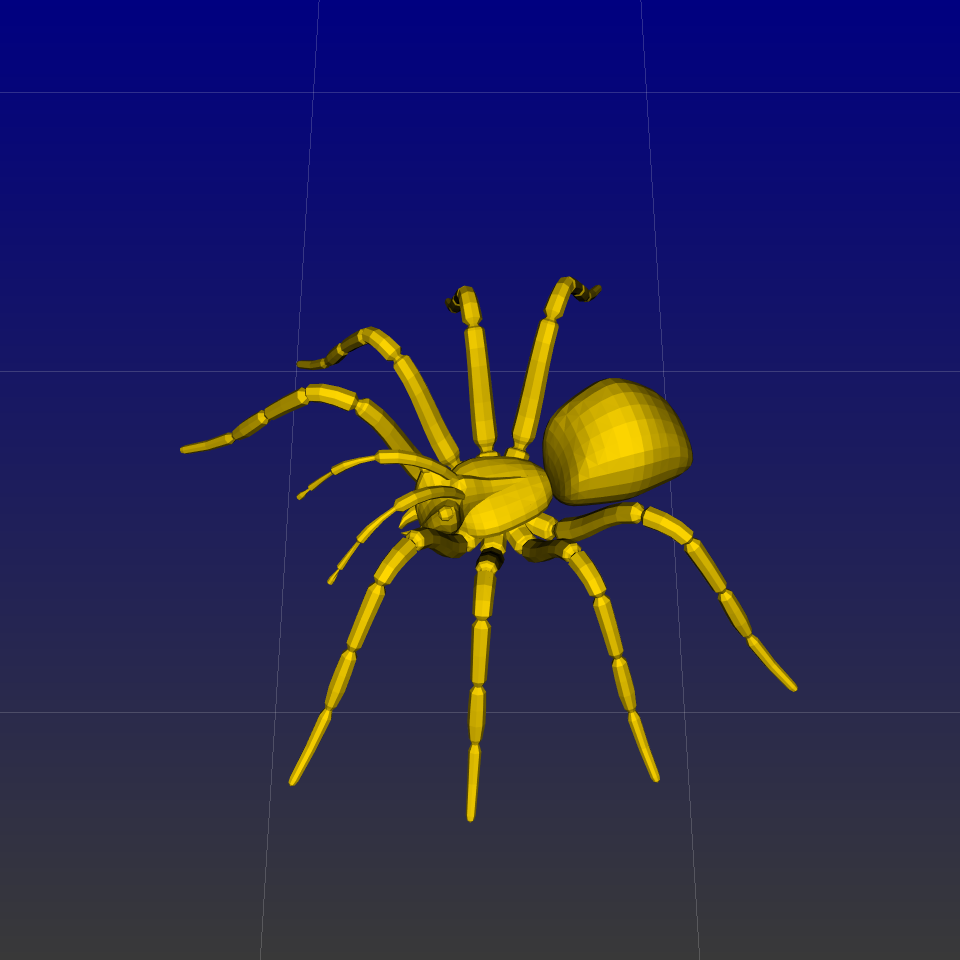
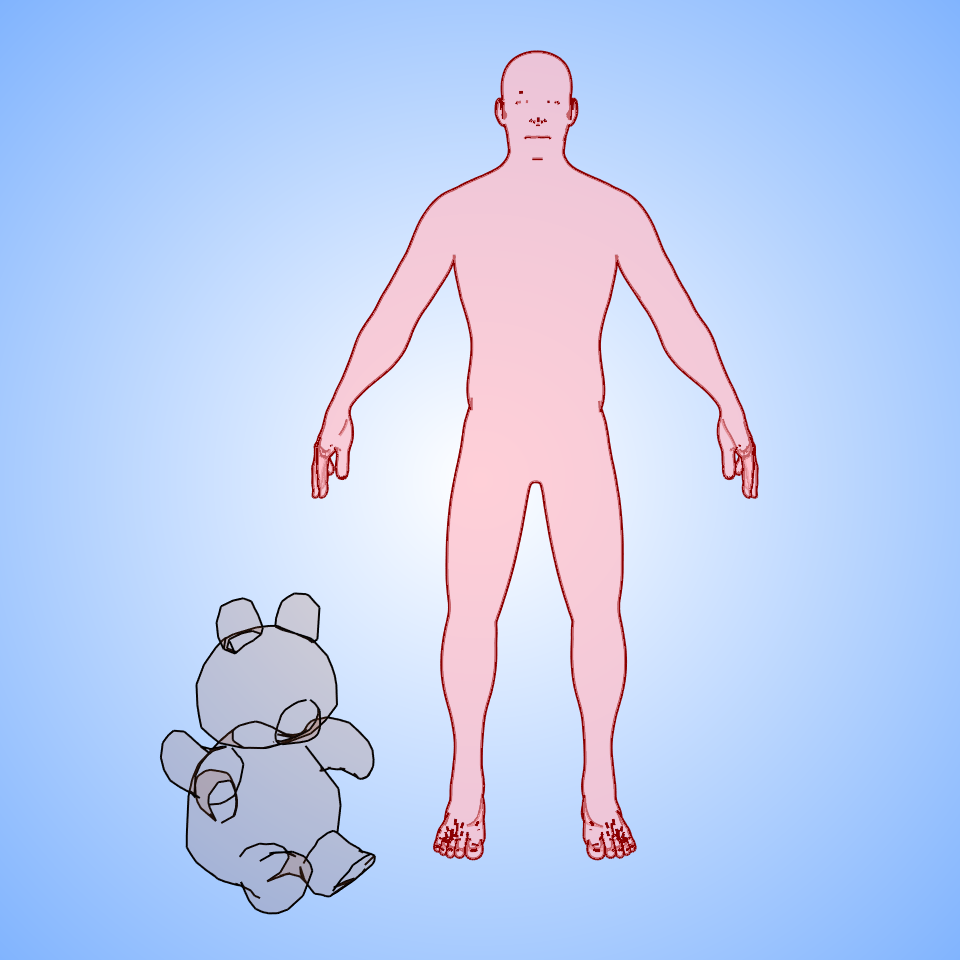

Note
Click here to download the full example code
Vedo
Visualize a static plot with PyVista.
Load a mesh
from vedo import Plotter, Mesh, dataurl
mesh = Mesh(dataurl+"spider.ply")
Plot the mesh
a = 1
plt = Plotter(offscreen=True)
plt.show(mesh, axes=11, bg='bb', bg2='navy', elevation=-30, interactive=False)

Out:
<vedo.plotter.Plotter object at 0x7f98e1fb3880>
Plot another mesh
from vedo import dataurl, settings, Plotter, Mesh, Text2D
settings.background_gradient_orientation = 3 # radial gradient
# Create an instance of the Plotter class,
# which creates a default camera needed for silhouette()
plt = Plotter(offscreen=True)
# Create a Text2D object to display the docstring at the bottom-center of the plot,
# using the Bongas font with a size of 2 and a dark green background
txt = Text2D(__doc__, pos="bottom-center", font="Bongas", s=2, bg="dg")
# Load a mesh of a human figure, disable lighting (reflections),
# set the color to pink, and set the transparency to 0.5
man = Mesh(dataurl + "man.vtk").lighting("off").c("pink").alpha(0.5)
# Load a mesh of a teddy bear, scale and rotate it around the z-axis,
ted = Mesh(dataurl + "teddy.vtk").scale(0.4).rotate_z(-45).pos(-1, -1, -1)
ted.lighting("off").c("sienna").alpha(0.1)
# Show the meshes, the default silhouette of the teddy bear mesh
plt.show(
txt,
ted,
man,
ted.silhouette(), # default silhouette of the teddy bear mesh
man.silhouette(feature_angle=40).linewidth(3).color("dr"),
bg="white", # set the background color to wheat
bg2="blue8", # set the color of the gradient to light blue
elevation=-80, # set the elevation angle of the camera
zoom=1.2, # zoom in on the plot
)

Out:
<vedo.plotter.Plotter object at 0x7f98e201b400>
Total running time of the script: ( 0 minutes 0.192 seconds)
Download Python source code: plot_vedo.py